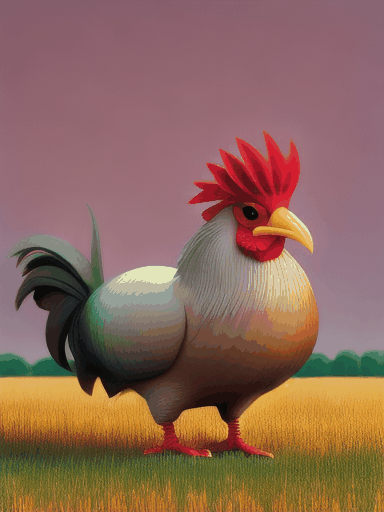
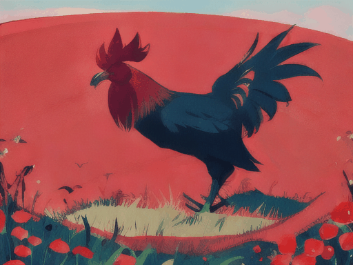
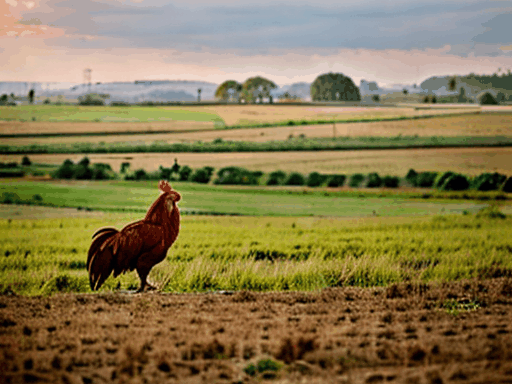

Kipengele cha Kuunda Video katika AiCasso kinakuruhusu kuunda video kwa kuelezea tu unachotaka kuona. Andika wazo lako, na AiCasso itakuletea maisha katika video!
Jinsi Inavyofanya Kazi:
Maelekezo:
"Kuku wa 3D anayehamasishwa katika uwanja peke yake, akila na kufurahia. Fanya iwe video ya picha ya portreti yenye hatua 50 za kupunguza kelele."
Matokeo:

Maelekezo:
"Katuni ya kuku katika uwanja kwa vipimo vya mandhari."
Matokeo:

Maelekezo:
"Kuku katika uwanja."
Matokeo:
Maelekezo:
"Kuku ambaye yuko uwanjani peke yake. Mpe hisia za asili."
Matokeo:

Chaguzi Zaidi
Unataka kuboresha video yako? Hapa kuna mipangilio ambayo unaweza kucheza nayo:
Idadi ya Picha: Chagua ni picha ngapi (picha za kibinafsi) video yako itakuwa nazo. Unaweza kufikia picha 25, huku 16 ikiwa ni ya kawaida.
Idadi ya Hatua za Kupunguza Kelele: Hii inasimamia jinsi video yako inavyoonekana laini. Hatua zaidi zinamaanisha video laini zaidi. Unaweza kuweka hadi hatua 50, huku 20 ikiwa ni ya kawaida.
Skeli ya Mwongozo: Hii inasaidia video kufuata maelezo yako kwa karibu. Nambari kubwa, ndivyo inavyofuata maelekezo yako zaidi. Mipangilio ni kutoka 0 hadi 8, huku 8 ikiwa ni ya kawaida.
Kukosa Kichwa: Kosa tabaka fulani kwa mtindo tofauti wa video. Kwa kawaida, hakuna tabaka zinazokosa, lakini unaweza kukosa hadi 2.
Upanuzi wa Upana na Urefu: Unaweza kufanya video yako iwe kubwa zaidi kwa kubadilisha azimio. Kawaida ni 1024x1024 pixels, lakini unaweza kubadilisha hili ili kukidhi mahitaji yako.
Nguvu ya Upanuzi: Hii inabadilisha jinsi video yako inavyobadilika wakati wa kupanuliwa. Kawaida ni 1, lakini unaweza kubadilisha ili kuona tofauti zaidi.
Skeli ya Mwongozo wa Upanuzi: Hii inaongoza mchakato wa kupanua, ikiwa na kiwango kutoka 0 hadi 8, na kiwango cha kawaida ni 8.
Hatua za Ufafanuzi wa Upanuzi: Idadi ya hatua zinazochukuliwa kupanua video. Hatua zaidi zinaunda upanuzi laini zaidi, huku kiwango cha juu kikiwa 50 na kiwango cha kawaida kikiwa 20.
Uboreshaji wa Sampuli: Unataka video iliyosafishwa zaidi? Washa hii. Imezimwa kwa kawaida.
Mbegu ya Uboreshaji wa Sampuli: Tumia hii kuunda video sawa kila wakati kwa sampuli iliyoboreshwa. Ni hiari na imezimwa kwa kawaida.
Picha kwa Sekunde (FPS): Weka kasi ya video yako. Kawaida ni 16 FPS, lakini unaweza kuibadilisha hadi 16.
Mfano wa Video: Chagua mtindo wa video yako. Chaguzi ni pamoja na:
Kawaida: Mfano wa video wa kawaida.
Katuni: Mtindo wa video wa katuni.
Asili: Mtindo wa video wa kweli, unaoonekana wa asili.
3D Anayehamasishwa: Mtindo wa video wa 3D anayehamasishwa.
Kumbuka, mipangilio hii ni hiari. Kipengele cha Kuunda Video kinafanya kazi vizuri na maelezo rahisi, hivyo jisikie huru kujaribu na kuona unachoweza kuunda!